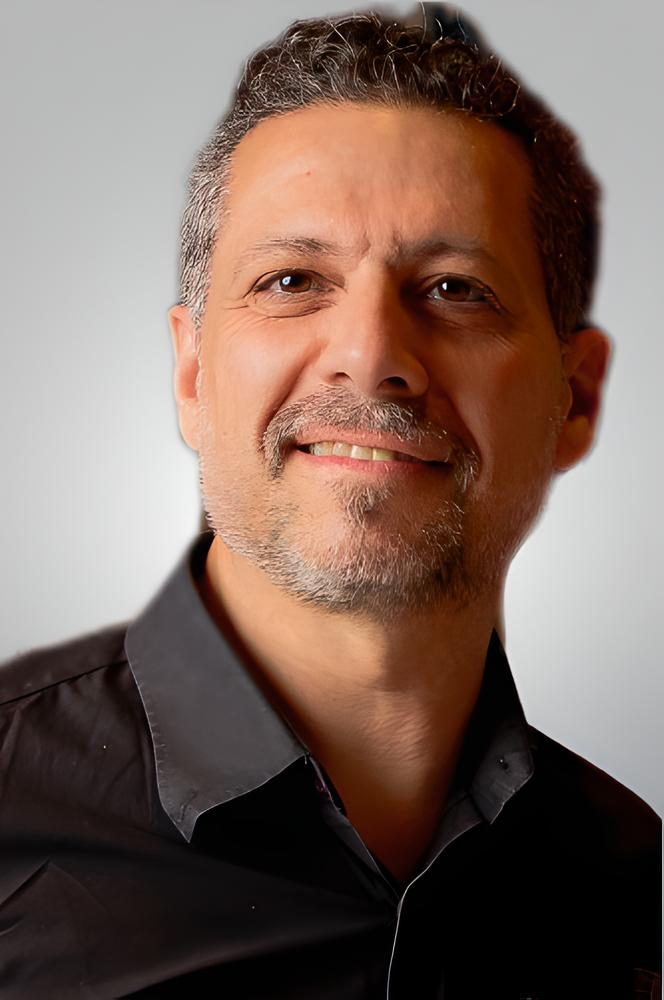

Más de 17 años de trayectoria en sistemas informáticos, gestión de proyectos tecnológicos y educación técnica. Actualmente me dedico a la innovación tecnológica con enfoque estratégico en Inteligencia Artificial, IoT y Automatización de Procesos. Experiencia comprobable en transformar necesidades educativas y organizacionales en soluciones digitales de alto impacto, optimizando recursos y potenciando la eficiencia operativa.